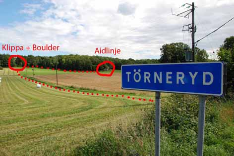

GPS: 56.221,15.0297
Liten brant klippa med mycket fin, tunn spricka mitt på. Klippan ligger vid en hage och syns tydligt från vägen. 200 meter norr om klippan finns en större vägg där inga kända linjer är etablerade, där finns också en stor, brant boulder med 3-4 problem från 6b-7a.
Vägbeskrivning från Karlshamn. Kör österut längs E22 och sväng av mot Åryd efter ca 10 km. Ta vänster direkt och kör under E22 och in i Åryd by. Sväng höger vid kyrkan och följ vägen i ca 1,3 km, där tar du av åt vänster mot Törneryd. Efter 1,8 km kommer det en Hembygdsgård på din vänstra sida, nu bör du se klippan på höger sida, parkera vid hembgdsgården. Gå tillbaka 30-40m längs vägen och sväng vänster in på Blekingeleden och följ den österut över åkrarna. När du kommer till skogen har du den större klippan med bouldern rakt framför dig och för att komma till den lilla branta väggen följer du bara skogskanten åt höger (söderut).
kategori:Saknar skiss
kategori:Saknar leder
kategori:Saknar koordinater
kategori:Saknar skrivarformatering
Category:Blekinge
Copyright (C) Permission is granted to copy, distribute and/or modify this document under the terms of the GNU Free Documentation License, Version 1.3